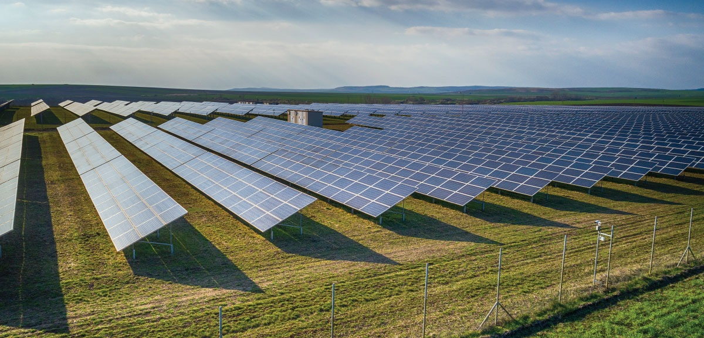
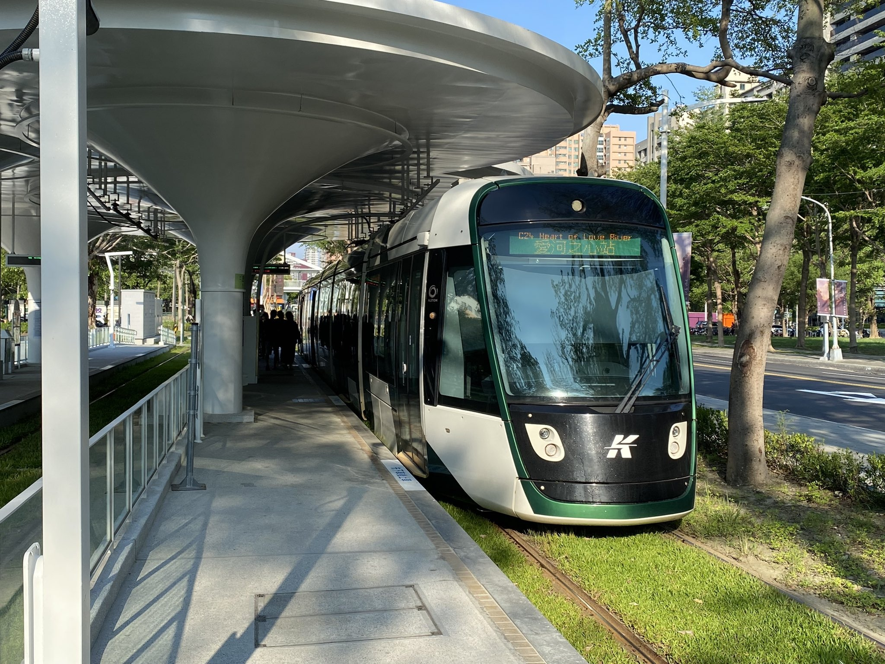
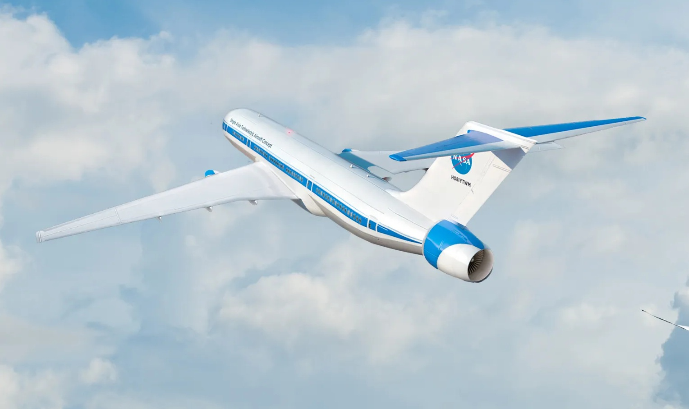
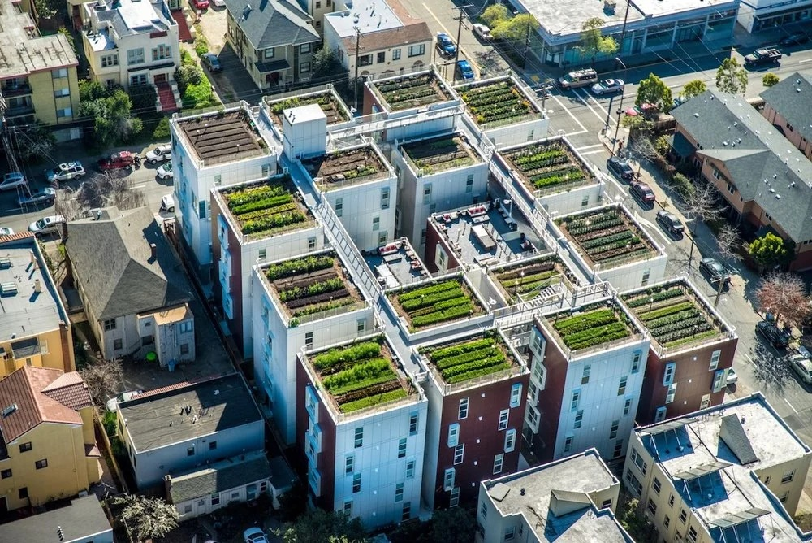
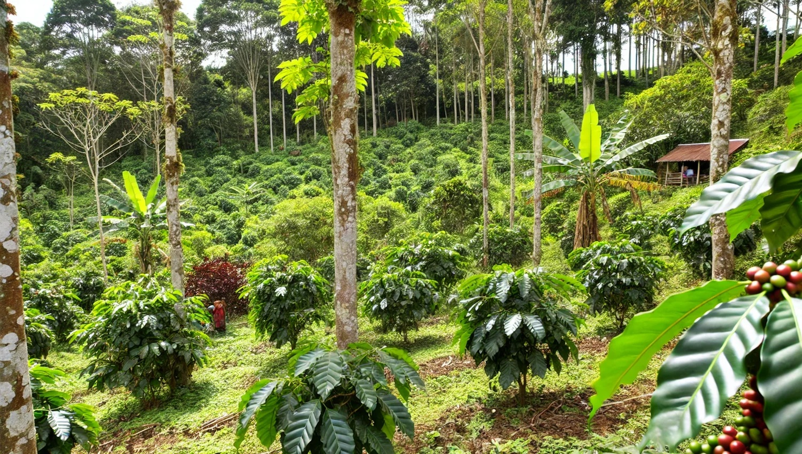

Solutions
There is no single fix for climate change. These are the solutions we propose, sector by sector.
Jump to a sector:
Energy

The first step is to replace fossil fuel power plants with renewable and other clean energy. Almost every other solution on this page depends on it, because electric trains, heat pumps and electric vehicles are only low-carbon if the electricity behind them is low-carbon too.
Solar
Malaysia is sunny all year round, which makes solar the obvious place to start. Panels can go on the roofs of homes, factories and shopping malls, on open land, and floating on reservoirs so that farmland is not used up.
Wind
Wind speeds in Malaysia are generally low, so wind will probably play a smaller role than solar. It is still worth studying, especially offshore sites and turbines designed for low wind speeds.
Nuclear
Nuclear power gives steady, low-carbon electricity day and night. It also has high upfront costs, long construction times, and safety and waste concerns. Whether it suits Malaysia needs an open debate based on facts.
Battery storage
Solar power is strongest at noon, but demand is often highest in the evening. Large batteries store extra clean energy during the day and release it when it is needed. This keeps the electricity supply steady and reduces the need for fossil fuel plants to fill the gap.
Mobility and Urban Planning

Many people drive because it is the only practical choice. Instead of penalising drivers, we should make other ways of getting around faster, safer and more comfortable than driving. When the alternative is good, people switch by choice.
Reliable buses and trains
Buses and trains must come on time, run often, and go where people actually need to go. Dedicated bus lanes keep buses out of traffic, and trains give people a fast ride that does not get stuck in a jam.
Trams
Trams suit city centres and medium-sized streets. They are electric and quiet, and they are usually cheaper to build than underground rail.
Walkable streets and covered walkways
Malaysia’s heat and heavy rain make walking unpleasant when there is no shade. Wide, continuous footpaths with covered walkways make it comfortable to walk to the station or the shops in any weather.
Bikes
Safe, separated bike lanes and secure bike parking make bikes practical for short trips. Bikes work best when they connect easily with buses and trains.
Last-mile connectivity
Many people live a short distance from the nearest station or bus stop. Feeder buses, bike sharing and safe walking routes close this gap, so that public transport can take people from door to door.
Transit-oriented development
Build homes, shops, offices and schools close to train and bus stations. When daily needs are within walking distance of public transport, people drive less because they no longer need to.
Aviation

Aviation is hard to decarbonise because aeroplanes need a lot of energy for their weight. There is no single fix yet, so several solutions are needed at the same time.
Sustainable Aviation Fuel
Sustainable Aviation Fuel (SAF) is jet fuel made from sources such as used cooking oil and agricultural waste instead of fossil oil. It can be blended with normal jet fuel and used in existing aeroplanes and airports, which makes it the most practical option in the near term.
Biofuels
Biofuels made from waste and residues can cut emissions from flying, as long as they are not grown by clearing forests or by taking land from food crops. Where the fuel comes from matters as much as the fuel itself.
Electric aircraft
Batteries are heavy, so electric aircraft are only suitable for short flights with few passengers for now. They could become useful on short regional routes as battery technology improves.
Hydrogen
Hydrogen could power larger aircraft in the longer term. It needs new aircraft designs, new airport equipment and a clean way to produce the hydrogen, so it is a long-term option and not a quick fix.
Buildings and Construction

Buildings produce emissions in two ways: through the materials used to build them, and through the electricity used to keep them cool.
Low-carbon cement
Making cement releases a large amount of carbon dioxide. Low-carbon cement replaces part of the high-emission ingredient with other materials, such as industrial by-products or calcined clay, which cuts the emissions of every building that uses it.
Green concrete
Green concrete uses recycled or waste materials, such as fly ash, slag or recycled aggregates, in place of some of the cement and fresh sand and stone. It can offer good strength with a smaller carbon footprint.
Insulation
Good roof and wall insulation keeps heat out of a building so that air conditioners do not need to work as hard. In a hot country, this is a practical way to cut electricity use.
Heat pumps
Heat pumps move heat instead of creating it, so they use far less electricity than ordinary electric water heaters. Air conditioners already work on this principle, so choosing high-efficiency models and heat pump water heaters lowers a building’s electricity use.
Food and Agriculture

Growing, transporting and wasting food all produce greenhouse gases. This includes methane, a gas that traps far more heat than carbon dioxide in the short term.
Agroforestry
Agroforestry grows trees together with crops or livestock. The trees store carbon, shade the plants and protect the soil, and they can give farmers extra income from fruit or timber.
Regenerative agriculture
Regenerative agriculture focuses on healthy soil: planting cover crops, ploughing less and using less chemical fertiliser. Healthy soil holds more carbon and water, and helps farms cope with extreme weather.
Cut methane
Methane comes from livestock, flooded rice fields and rotting food in landfills. Better livestock feed, improved water management in rice fields, and keeping food waste out of landfills all reduce it.
Anaerobic digestion
Anaerobic digestion breaks down food waste, animal manure and farm residues without oxygen in a sealed tank. It captures the methane as biogas, which can be used for cooking, heat or electricity, and leaves behind material that can be used as fertiliser.
Reduce food miles
Food miles are the distance food travels from farm to plate. Buying more food that is grown locally and in season, and building shorter supply chains, cuts emissions from transport and refrigeration.